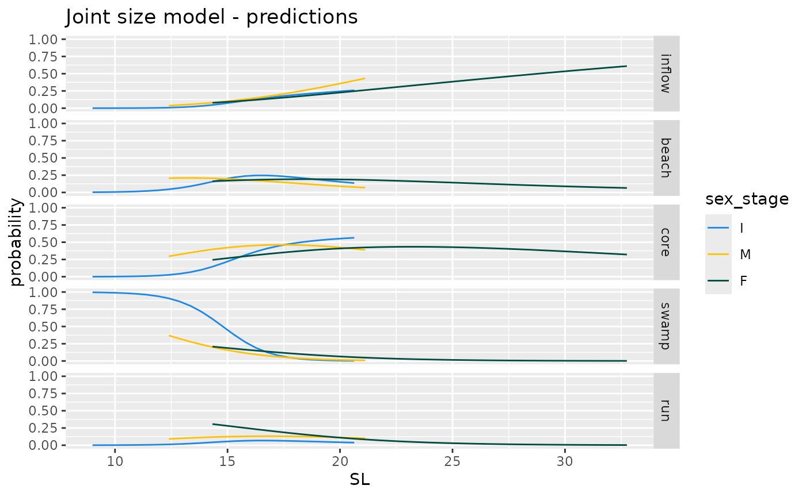
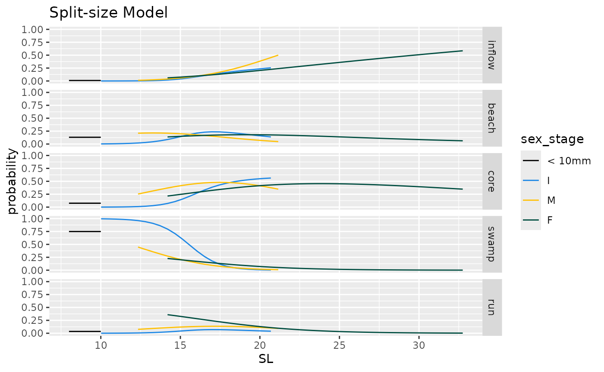
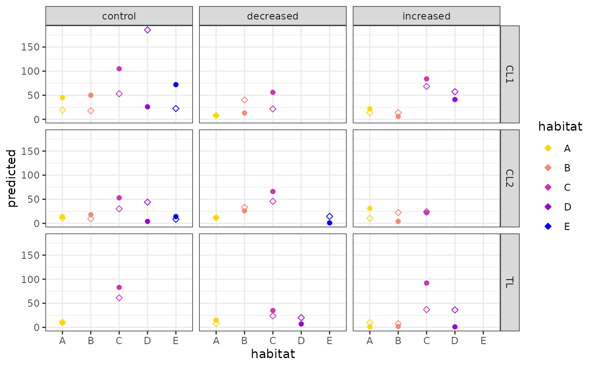

DME-030_Habitat_use.RmdHere we will use the benthic area calculated here to create predictive models to assign an individual to the different habitats (with associated probabilities) based on its size, sex and habitat availability.
We will fit a Discrete Choice Model on the capture data alone to calculate parameters defining the probability to choose a habitat type based on size and sex, and weighed by the habitat avilability. The model will be fitted using the package mlogit.
Discrete Choice Models are used in econometrics to analyse, describe and predict individual choices among a finite set of discrete alternatives, based on a series of covariates that can be attributes to the individual or to the alternatives. For example, we can analyse and predict the preferred mean of transport by an individual, based on age and income (individual attributes), between train, bus and car each of which is associated with a certain cost, travel time and comfort (alternative attributes). Moreover, we can include a third category of covariates. The choice can be repeated several times, and each time the season or weather might be different (choice situation attributes) and affect the decision.
We will then use the parameters estimated by the model to calculate the simulated habitat occupancy for each pool during the recapture, based on the individuals that were recaptured, their size and sex. Comparing this simulated occupancy with the real occupancy we will detect an effect of density manipulation on habitat use.
## ── Attaching core tidyverse packages ──────────────────────── tidyverse 2.0.0 ──
## ✔ dplyr 1.1.4 ✔ readr 2.1.5
## ✔ forcats 1.0.0 ✔ stringr 1.5.1
## ✔ ggplot2 3.5.2 ✔ tibble 3.2.1
## ✔ lubridate 1.9.4 ✔ tidyr 1.3.1
## ✔ purrr 1.0.4
## ── Conflicts ────────────────────────────────────────── tidyverse_conflicts() ──
## ✖ dplyr::filter() masks stats::filter()
## ✖ dplyr::lag() masks stats::lag()
## ℹ Use the conflicted package (<http://conflicted.r-lib.org/>) to force all conflicts to become errors##
## Attaching package: 'magrittr'
##
## The following object is masked from 'package:purrr':
##
## set_names
##
## The following object is masked from 'package:tidyr':
##
## extract## Loading required package: dfidx
##
## Attaching package: 'dfidx'
##
## The following object is masked from 'package:stats':
##
## filter
library(ggpubr)
# this package requires the package guppyDme to be installed. If the user wishes not to install the package, please comment out the "library(guppyDme)" line and run instead the lines commented out below
#### If you have the guppyDme package installed
# loading package
library(guppyDme)
# # If you do NOT wish to install the guppyDme package, please uncomment and run the following two lines of code, adding the package functions to the Global Environment and loading the data
# source(file.path(here::here(), "R", "package_functions.R"))
# load(file.path(here::here(), "data", "DMEdata.rda"))
# loading data
data <- DMEdata
pool_comp <- readRDS(file.path(here::here(), "vignettes", "DME_pool_composition.rds"))
treatment_tab <- readRDS(file.path(here::here(), "vignettes", "DME_density_factor_in_treatments.rds"))
# I am creating an additional column in the dataset, redefining sex_stage classes
data %<>%
mutate(sex_stage = score_sexst(., f_threshold = 14, f_unit = "SL"))## Warning: There were 2 warnings in `mutate()`.
## The first warning was:
## ℹ In argument: `sex_stage = score_sexst(., f_threshold = 14, f_unit = "SL")`.
## Caused by warning in `ifelse()`:
## ! NAs introduced by coercion
## ℹ Run `dplyr::last_dplyr_warnings()` to see the 1 remaining warning.To determine the structure of the data to be analysed I am using the approach detailed in this vignette.
Before proceeding, DCMs allow to fit three separate kind of covariate, defined by the scale at which they vary:
In our case we will include size (I), sex (I) and the benthic area associated with each habitat (A). There are also other variables we could be including, and might, in the future:
For now we’ll just stick to the simplest model, and fitted to the capture data only. Here using relative benthic area measures for the different habitats.
# adding pool composition information to the data
data <- pool_comp %>%
mutate(recap = ifelse(cap_recap == "cap", 0, 1)) %>%
select(recap, streamID, patchID,
A = relA, B = relB, C = relC, D = relD, E = relE, tot_ba = tot) %>%
left_join(data, .)## Adding missing grouping variables: `cap_recap`
## Joining with `by = join_by(streamID, recap, patchID)`
# trimming only the needed data
# We are here only including first capture, excluding Taylor mouth, and those datapoints where
# habitat is not defined
# We are also adding a unique ID column, to cope with repeated cohort marks later
hab_sel <- data %>%
filter(recap == 0, streamID != "TM", !is.na(habitat)) %>%
select(markID, SL, sex_stage, habitat,
A, B, C, D, E) %>%
add_column(id = 1:nrow(.))
head(hab_sel)## # A tibble: 6 × 10
## markID SL sex_stage habitat A B C D E id
## <fct> <chr> <chr> <fct> <dbl> <dbl> <dbl> <dbl> <dbl> <int>
## 1 5B6O 21.29 F D 0.159 0.279 0.434 0.129 0 1
## 2 6W7K 20.62 F D 0.159 0.279 0.434 0.129 0 2
## 3 6G7K 17.38 F D 0.159 0.279 0.434 0.129 0 3
## 4 4G8K 17.64 M D 0.159 0.279 0.434 0.129 0 4
## 5 4P6P 19.01 F D 0.159 0.279 0.434 0.129 0 5
## 6 3R4K 15.72 F D 0.159 0.279 0.434 0.129 0 6We need to transform the data so that it would fit the long format described here. This allows the choice set to vary between choice events (meaning it will allow us to remove from a set of alternatives habitats that are not present in a given pool).
# reshaping it as a long format
hab_sel %<>%
gather(A, B, C, D, E, key = "alt", value = "ba") %>%
# just to better visualise it...
arrange(id) %>%
# creating the choice column
mutate(choice = as.numeric(habitat == alt)) %>%
select(id, markID, alt, choice, SL, sex_stage, ba) %>%
filter(ba > 0)
head(hab_sel)## # A tibble: 6 × 7
## id markID alt choice SL sex_stage ba
## <int> <fct> <chr> <dbl> <chr> <chr> <dbl>
## 1 1 5B6O A 0 21.29 F 0.159
## 2 1 5B6O B 0 21.29 F 0.279
## 3 1 5B6O C 0 21.29 F 0.434
## 4 1 5B6O D 1 21.29 F 0.129
## 5 2 6W7K A 0 20.62 F 0.159
## 6 2 6W7K B 0 20.62 F 0.279
# We need to make sure that every individuals has a decision assigned.
# If an individual was found in a habitat that is scored as having benthic area (ba) = 0,
# such instance would be a mistake, and should be fixed.
N_ROWS <- hab_sel %>%
group_by(id, markID) %>%
summarise(didPick = sum(choice)==1) %>%
filter(!didPick) %>%
nrow()## `summarise()` has grouped output by 'id'. You can override using the `.groups`
## argument.
stopifnot(N_ROWS == 0)
# all looks good!To build the model, I am using as guidelines two separate vignettes: vignette 1 | vignette 2.
One of the individual covariates we want to include is size. At the
moment, most individuals below 10 mm are assigned a character string
"<10". This can be dealt with in two ways. Either having
them all a numeric value assigned, that can be a random value drawn from
a uniform distribution between 8 and 10 mm (or a fixed value) or them
being removed from the analyses (and analysed separately), having only
large sized individuals.
We will try here both approaches and see how different the results are.
Here, we will assign a set value (9 mm) to each fish whose size is below 10 mm.
# here I define the set value
set_val <- 9
# all individuals below 10 mm (either measured or with a label "<10")
# will be assigned the set value
dj <- hab_sel %>%
mutate(SL = replace(SL, SL == "<10", set_val),
SL = as.numeric(SL),
SL = replace(SL, SL < 10, set_val))We can use the function mlogit.data() to transform the
data in the appropriate format.
mld_dj <- mlogit.data(as.data.frame(dj),
shape = "long",
alt.var = "alt",
chid.var = "id")The model does not work with tibbles, since it requires
rownames. From now on we need to work with data.frames
instead of tibbles.
We can now run the model, making sure to use the right formula.
##
## Call:
## mlogit(formula = choice ~ ba | SL * sex_stage, data = mld_dj,
## reflevel = "A", method = "nr")
##
## Frequencies of alternatives:choice
## A B C D E
## 0.127700 0.169953 0.434742 0.218779 0.048826
##
## nr method
## 6 iterations, 0h:0m:0s
## g'(-H)^-1g = 2.74E-07
## gradient close to zero
##
## Coefficients :
## Estimate Std. Error z-value Pr(>|z|)
## (Intercept):B 3.041746 1.046394 2.9069 0.0036505 **
## (Intercept):C 2.522669 0.787098 3.2050 0.0013505 **
## (Intercept):D 6.613799 1.910017 3.4627 0.0005348 ***
## (Intercept):E 6.653669 1.710734 3.8894 0.0001005 ***
## ba 2.344074 0.307263 7.6289 2.376e-14 ***
## SL:B -0.161337 0.048576 -3.3213 0.0008959 ***
## SL:C -0.096595 0.035123 -2.7502 0.0059555 **
## SL:D -0.393126 0.103678 -3.7918 0.0001496 ***
## SL:E -0.368928 0.088777 -4.1557 3.244e-05 ***
## sex_stageI:B 3.751584 1.502302 2.4972 0.0125170 *
## sex_stageI:C 2.686685 1.279408 2.0999 0.0357339 *
## sex_stageI:D 4.555692 2.225219 2.0473 0.0406286 *
## sex_stageI:E -2.368749 2.138873 -1.1075 0.2680884
## sex_stageM:B 2.377612 4.114288 0.5779 0.5633374
## sex_stageM:C -0.580063 3.577356 -0.1621 0.8711889
## sex_stageM:D 12.206176 7.618334 1.6022 0.1091090
## sex_stageM:E -2.615696 8.124831 -0.3219 0.7474993
## SL:B -0.247052 0.091056 -2.7132 0.0066640 **
## SL:C -0.155226 0.076621 -2.0259 0.0427754 *
## SL:D -0.321752 0.134643 -2.3897 0.0168637 *
## SL:E 0.097280 0.128986 0.7542 0.4507336
## SL:B -0.132702 0.231284 -0.5738 0.5661292
## SL:C 0.040154 0.199876 0.2009 0.8407801
## SL:D -0.740907 0.457738 -1.6186 0.1055276
## SL:E 0.080319 0.470366 0.1708 0.8644133
## ---
## Signif. codes: 0 '***' 0.001 '**' 0.01 '*' 0.05 '.' 0.1 ' ' 1
##
## Log-Likelihood: -1099.5
## McFadden R^2: 0.26578
## Likelihood ratio test : chisq = 795.98 (p.value = < 2.22e-16)The interpretation of the sign of the estimate for choice-specific
variables (here SL and sex_stage) is
non-intuitive, since it refers to the estimate compared to the other
levels. What can be interpreted is the estimated coefficient of
alternative-specific variables (ba)
The interesting effect seem to be between habitats. They are occupied with significantly different probabilities by females, and there are no significant differences between females and the other two classes (trend safe for the occupancy of the C habitat by immature individuals). Size also seems to have a significant effect on habitat occupancy. Benthic area has also a significant positive effect (which can be interpreted, given it’s alternative specific).
It’s good to keep in mind what the reference level and the Intercept
are. The intercept refers to females (F) of size 0. The
reference level for the dependent variable is habitat A. So
all odd-ratios in the intercept refer to the odd ratio between the
probability to be in a given habitat and the probability to be in A.
The function fitted() makes it extremely easy to
calculate the predicted probabilities, for each row in the data, to be
in each of the habitats, given the model parameters.
## A B C D E
## 1 0.1963599 0.1757113 0.5962863 0.03164248 0
## 2 0.1836065 0.1830545 0.5948358 0.03850318 0
## 3 0.1272047 0.2139024 0.5635508 0.09534219 0
## 4 0.1270676 0.2125648 0.6241061 0.03626144 0
## 5 0.1545004 0.1997245 0.5847627 0.06101233 0
## 6 0.1016444 0.2234131 0.5286300 0.14631251 0It’s encouraging to see that the predicted probability to occupy “E”, when this is not available, is zero.
Generating a mock dataset it’s possible to display the average probabilities to occupy different habitats based on size and sex. The mock dataset should be similar to the real data in its format.
head(mld_dj)## ~~~~~~~
## first 10 observations out of 4366
## ~~~~~~~
## id markID alt choice SL sex_stage ba idx
## 1 1 5B6O A 0 21.29 F 0.1585938 1:A
## 2 1 5B6O B 0 21.29 F 0.2789063 1:B
## 3 1 5B6O C 0 21.29 F 0.4335938 1:C
## 4 1 5B6O D 1 21.29 F 0.1289062 1:D
## 5 2 6W7K A 0 20.62 F 0.1585938 2:A
## 6 2 6W7K B 0 20.62 F 0.2789063 2:B
## 7 2 6W7K C 0 20.62 F 0.4335938 2:C
## 8 2 6W7K D 1 20.62 F 0.1289062 2:D
## 9 3 6G7K A 0 17.38 F 0.1585938 3:A
## 10 3 6G7K B 0 17.38 F 0.2789063 3:B
##
## ~~~ indexes ~~~~
## chid alt
## 1 1 A
## 2 1 B
## 3 1 C
## 4 1 D
## 5 2 A
## 6 2 B
## 7 2 C
## 8 2 D
## 9 3 A
## 10 3 B
## indexes: 1, 2First, we are creating the changing variables.
# vector of lengths
sls <- seq(range(mld_dj$SL, na.rm = T)[1], range(mld_dj$SL, na.rm = T)[2], length.out = 50)
# vector of sex_stages
sxs <- unique(mld_dj$sex_stage, na.rm = T)
# then using expand.grid I can create all combinations.
# Each of them is a hypothetical individual, so it whould receive an id
block <- cbind(expand.grid(SL = sls, sex_stage = sxs),
id = 1:(length(sls)*length(sxs)))Now each individual should be repeated as many times as the available habitats, and each of the habitats should be assigned an alternative-specific variable, if there are. In our case, we do have the relative benthic area. Here, to make the interpretation of the figures easier, we will assume all habitats are present with equal proportions (0.20).
habs <- data.frame(alt = unique(as.character(mld_dj$alt),
na.rm = T),
ba = .2)
# now I can "expand grid" again (this time using merge, since I am combining dataframes)
mock_d <- merge(habs, block, by = NULL)
# habitat alternatives should be turned into factors
mock_d$alt <- as.factor(mock_d$alt)Now we have what we need to predict…
# generating predictions and storing them side by side with the block
# (which unlike mock_d does not have repeated individuals once per habitat)
pred_mock <- cbind(block,
predict(DCM_j, newdata = mock_d, type = "probs")
)
# I don't want to show prediction for irrational values (e.g. very
# large immature individuals, which are not present, or very small mature ones)
# I'll limit the plotting to reasonable values
# here I'll find the ranges for female, males and immature individuals
low_m <- min(as.numeric(data %>% filter(sex_stage == "M") %>% pull(SL)), na.rm = T)## Warning: NAs introduced by coercion
low_f <- min(as.numeric(data %>% filter(sex_stage == "F") %>% pull(SL)), na.rm = T)
hi_m <- max(as.numeric(data %>% filter(sex_stage == "M") %>% pull(SL)), na.rm = T)## Warning: NAs introduced by coercion## Warning: NAs introduced by coercion
pred_mock %<>%
filter(sex_stage == "I" & SL < hi_i |
sex_stage == "F" & SL > low_f |
sex_stage == "M" & SL > low_m & SL < hi_m)
# reshaping dataset to long(er) format, and releveling sex_stage
pred_mock %<>%
gather(A, B, C, D, E, key = habitat, value = probability) %>%
mutate(sex_stage = factor(sex_stage, levels = c("I", "M", "F")))…and we can plot. When plotting, we’ll make sure to trim the
predictions to the measured values of size in the
sex_stages, so we won’t infer non-realistic
probabilities.
# plotting
ggplot(pred_mock, aes(x = SL, y = probability, colour = sex_stage)) +
geom_line() +
ylim(0,1) +
scale_color_manual(values = c("#1E88E5", "#FFC107", "#004D40")) +
facet_grid(habitat ~ ., scales = "free", labeller = labeller(habitat = hablab())) +
ggtitle("Joint size model - predictions")
We will now repeat the same analyses, but using a split size approach. Here we will run a model for individuals larger than 10 mm, and a model (size-independent) for individuals below that threshold value.
# for now I will only take individuals with a numeric size
# creating a dataset for adults (> 10mm, with size information)
ds_ads <- hab_sel %>%
mutate(SL = as.numeric(SL)) %>%
filter(SL > 10)## Warning: There was 1 warning in `mutate()`.
## ℹ In argument: `SL = as.numeric(SL)`.
## Caused by warning:
## ! NAs introduced by coercion
# and a dataset for babies, <10mm, and without precise SL measurements
ds_bbs <- hab_sel %>%
filter(SL == "<10" | as.numeric(SL)<10)## Warning: There was 1 warning in `filter()`.
## ℹ In argument: `SL == "<10" | as.numeric(SL) < 10`.
## Caused by warning:
## ! NAs introduced by coercionWe are working here with two datasets. First, the adults regressions.
# converting dataset into mlogit format
mld_ads <- mlogit.data(as.data.frame(ds_ads),
shape = "long",
alt.var = "alt",
chid.var = "id")
# running model
DCM_ads <- mlogit(choice ~ ba | SL * sex_stage, mld_ads, reflevel = "A")
# visualizing results
summary(DCM_ads)##
## Call:
## mlogit(formula = choice ~ ba | SL * sex_stage, data = mld_ads,
## reflevel = "A", method = "nr")
##
## Frequencies of alternatives:choice
## A B C D E
## 0.173971 0.163347 0.501992 0.104914 0.055777
##
## nr method
## 6 iterations, 0h:0m:0s
## g'(-H)^-1g = 0.000139
## successive function values within tolerance limits
##
## Coefficients :
## Estimate Std. Error z-value Pr(>|z|)
## (Intercept):B 2.9255178 1.0463262 2.7960 0.0051741 **
## (Intercept):C 2.5015990 0.7795960 3.2088 0.0013327 **
## (Intercept):D 6.5548691 1.9087396 3.4341 0.0005944 ***
## (Intercept):E 6.7215712 1.7023475 3.9484 7.867e-05 ***
## ba 1.8224748 0.3457420 5.2712 1.355e-07 ***
## SL:B -0.1572519 0.0485833 -3.2367 0.0012090 **
## SL:C -0.0922041 0.0348057 -2.6491 0.0080704 **
## SL:D -0.3914744 0.1036319 -3.7775 0.0001584 ***
## SL:E -0.3694206 0.0883616 -4.1808 2.905e-05 ***
## sex_stageI:B 6.2723055 2.1447820 2.9244 0.0034507 **
## sex_stageI:C 4.6461756 1.8366831 2.5297 0.0114175 *
## sex_stageI:D 6.3184530 2.8229254 2.2383 0.0252038 *
## sex_stageI:E -0.6554867 2.7615549 -0.2374 0.8123764
## sex_stageM:B 2.9088381 4.0900103 0.7112 0.4769569
## sex_stageM:C -0.0832127 3.5448107 -0.0235 0.9812718
## sex_stageM:D 12.8493884 7.5828446 1.6945 0.0901638 .
## sex_stageM:E -2.0030492 8.1144747 -0.2468 0.8050252
## SL:B -0.4026189 0.1321971 -3.0456 0.0023222 **
## SL:C -0.2718278 0.1090607 -2.4924 0.0126867 *
## SL:D -0.4238873 0.1774203 -2.3892 0.0168865 *
## SL:E -0.0056157 0.1694523 -0.0331 0.9735627
## SL:B -0.1628600 0.2298388 -0.7086 0.4785829
## SL:C 0.0115024 0.1979583 0.0581 0.9536647
## SL:D -0.7793494 0.4555359 -1.7108 0.0871105 .
## SL:E 0.0432260 0.4697855 0.0920 0.9266884
## ---
## Signif. codes: 0 '***' 0.001 '**' 0.01 '*' 0.05 '.' 0.1 ' ' 1
##
## Log-Likelihood: -829.03
## McFadden R^2: 0.18065
## Likelihood ratio test : chisq = 365.56 (p.value = < 2.22e-16)The results for adults only are very similar to those obtained for all individuals in the “Joint size” model.
We can now repeat the same analyses, with the individuals < 10 mm.
mld_bbs <- mlogit.data(as.data.frame(ds_bbs),
shape = "long",
alt.var = "alt",
chid.var = "id")
# running model
DCM_bbs <- mlogit(choice ~ ba | 1, mld_bbs, reflevel = "A")
# visualizing results
summary(DCM_bbs)##
## Call:
## mlogit(formula = choice ~ ba | 1, data = mld_bbs, reflevel = "A",
## method = "nr")
##
## Frequencies of alternatives:choice
## A B C D E
## 0.016026 0.185897 0.272436 0.493590 0.032051
##
## nr method
## 6 iterations, 0h:0m:0s
## g'(-H)^-1g = 1.44E-07
## gradient close to zero
##
## Coefficients :
## Estimate Std. Error z-value Pr(>|z|)
## (Intercept):B 2.65913 0.47181 5.6360 1.741e-08 ***
## (Intercept):C 2.10509 0.47361 4.4448 8.797e-06 ***
## (Intercept):D 4.39983 0.47246 9.3126 < 2.2e-16 ***
## (Intercept):E 1.33148 0.55660 2.3922 0.01675 *
## ba 4.50326 0.74174 6.0712 1.270e-09 ***
## ---
## Signif. codes: 0 '***' 0.001 '**' 0.01 '*' 0.05 '.' 0.1 ' ' 1
##
## Log-Likelihood: -262.95
## McFadden R^2: 0.293
## Likelihood ratio test : chisq = 217.94 (p.value = < 2.22e-16)Below is a combined plot for the split sizes.
# predictions for adults
sls_ads <- seq(range(mld_ads$SL, na.rm = T)[1], range(mld_ads$SL, na.rm = T)[2], length.out = 50)
sxs_ads <- unique(mld_ads$sex_stage, na.rm = T)
block_ads <- cbind(expand.grid(SL = sls_ads, sex_stage = sxs_ads),
id = 1:(length(sls_ads)*length(sxs_ads)))
habs_ads <- data.frame(alt = unique(as.character(mld_ads$alt), na.rm = T),
ba = .2)
mock_ads <- merge(habs_ads, block, by = NULL)
# predictions for adults
pred_mock_s <- cbind(block_ads,
predict(DCM_ads, newdata = mock_ads, type = "probs")
)
# as done for the joint model, triming sex_stage to actual size range
pred_mock_s %<>%
filter(sex_stage == "I" & SL < hi_i |
sex_stage == "F" & SL > low_f |
sex_stage == "M" & SL > low_m & SL < hi_m)
# reshaping dataset
pred_mock_s %<>%
gather(A, B, C, D, E, key = habitat, value = probability)
# creating a separate predictions for babies and combining the two datasets
pred_mock_s <- merge(data.frame(probability = predict(DCM_bbs,
newdata = habs,
type = "probs"),
habitat = names(predict(DCM_bbs,
newdata = habs,
type = "probs"))),
data.frame(SL = c(8, 10), sex_stage = rep("< 10mm", 2))) %>%
bind_rows(pred_mock_s)
# reordering factors for sex_stage
pred_mock_s %<>%
mutate(sex_stage = factor(sex_stage, levels = c("< 10mm", "I", "M", "F")))
# plotting
ggplot(pred_mock_s, aes(x = SL, y = probability, colour = sex_stage)) +
geom_line() +
ylim(0,1) +
scale_color_manual(values = c("black", "#1E88E5", "#FFC107", "#004D40")) +
facet_grid(habitat ~ ., scales = "free", labeller = labeller(habitat = hablab())) +
ggtitle("Split-size Model")
Now that we have generated models from the capture data we can use them, together with the census data from the recapture, to generate predicted occupancy. If density has not affected habitat use, the predicted occupancy should match the observed one. If it has, the only matching observation would be for the control pool, whereas the observed occupancy in increased and decreased pool will not match the predicted one.
To generate the simulations, for simplicity, we will only use the joint model since it quite closely matches the split one.
First, we extract the data for the recapture.
The predict function in mlogit turns out to be rather
clunky and confusing. We are trying here to follow the direction of user
“Manos C” from this
thread to make it work. If not, we will then adopt the trick
suggested by user “Robert Bray”.
# I will here add information on the pool treatment,
# filter out the capture event info and transform SL "<10"
# values into the set_value
recap_data <- treatment_tab %>%
mutate(pool_treatment = str_replace_all(treatment,
c("I" = "increased",
"C" = "control",
"D" = "decreased"))) %>%
select(streamID, patchID, pool_treatment) %>%
ungroup() %>%
right_join(data %>% filter(recap == 1,
!is.na(habitat))) %>%
mutate(SL = replace(SL, SL == "<10", set_val),
SL = as.numeric(SL),
SL = replace(SL, SL < 10, set_val)) %>%
filter(!is.na(pool_treatment), !is.na(sex_stage))## Joining with `by = join_by(streamID, patchID)`## Warning: There was 1 warning in `mutate()`.
## ℹ In argument: `SL = as.numeric(SL)`.
## Caused by warning:
## ! NAs introduced by coercion
# filtering out the NAs for sex_stage is extremely important.
# see https://stats.stackexchange.com/questions/6702/predict-after-running-the-mlogit-function-in-r
# now I can select the columns I need for the predictions
# I am keeping the habitat to generate a fake choice column later
to_predict <- recap_data %>%
select(streamID, patchID, markID, SL, sex_stage, habitat, pool_treatment,
A, B, C, D, E) %>%
add_column(id = 1:nrow(.))
# extracting only individual info (dropping habitat area)
block_predict <- to_predict %>%
select(streamID, patchID, markID, SL, sex_stage, habitat, pool_treatment)
# and finally reshape is as a long format
# also, releveling the factors to match those above and creating mock choice
ml_topred <- to_predict %>%
gather(A, B, C, D, E, key = "alt", value = "ba") %>%
arrange(id) %>%
mutate(alt = factor(alt, levels = levels(mock_d$alt)),
sex_stage = factor(sex_stage, levels = levels(mock_d$sex_stage)),
choice = ifelse(habitat == alt, 1, 0)) %>%
select(alt, ba, SL, sex_stage, choice, id) %>%
filter(ba > 0) %>%
mutate(chid = id)
# the step of filtering out the choices where ba = 0 (non-existing
# alternatives) is crucial since it allows to predict a probability
# equal to zero to choose that habitat!
# I need to run the function `mlogit.data` (according to Manos C),
# as if this data needed to be anlysed
ml_topred <- mlogit.data(as.data.frame(ml_topred), shape = "long",
alt.var = "alt", chid.var = "id")We can now extract the predicted probabilities for each individual to be in one of the habitats in a given pool, based on their size, sex and the habitat availability during recapture.
# before storing the model anywhere, I am making some quick tests
# whether the predict works out well.
# The number of predictions should be equal to the number of individuals
stopifnot(nrow(block_predict) == nrow(predict(DCM_j, newdata = ml_topred, type = "probs")))
# also, the predict should be unaffected by the arbitrary choice I introduced
x <- predict(DCM_j, newdata = ml_topred, type = "probs")[1,]
ml_topred2 <- ml_topred
ml_topred2[1:3, "choice"] <- c(1, 0, 0)
y <- predict(DCM_j, newdata = ml_topred2, type = "probs")[1,]
stopifnot(sum(x-y) == 0)
# all good, we can store the predictions
recap_preds <- cbind(block_predict,
predict(DCM_j, newdata = ml_topred, type = "probs"))Now that we generated the predicted probabilities of each individual to be in a given habitat given its size, sex and habitat availability, we can generate simulations of occupancy for each pool and compare the reference value with the real observed occupancy.
Before running any simulation, we can plot the observed occupancy with the sum of probabilities for individuals to be in each habitat (summing individual probability distributions among habitats).
# gathering predicted distributions
pred_distr <- recap_preds %>%
group_by(streamID, pool_treatment) %>%
summarize(A = sum(A),
B = sum(B),
C = sum(C),
D = sum(D),
E = sum(E)) %>%
gather(A, B, C, D, E, key = habitat, value = predicted)## `summarise()` has grouped output by 'streamID'. You can override using the
## `.groups` argument.
# now observed distributions
obs_distr <- recap_preds %>%
group_by(streamID, pool_treatment) %>%
summarize(A = sum(habitat == "A"),
B = sum(habitat == "B"),
C = sum(habitat == "C"),
D = sum(habitat == "D"),
E = sum(habitat == "E")) %>%
gather(A, B, C, D, E, key = habitat, value = observed)## `summarise()` has grouped output by 'streamID'. You can override using the
## `.groups` argument.
# now joining the two
pred_v_obs <- inner_join(pred_distr, obs_distr) %>%
filter(observed > 0)## Joining with `by = join_by(streamID, pool_treatment, habitat)`
# and plotting
ggplot(pred_v_obs, aes(x = habitat, col = habitat)) +
geom_point(aes(y = predicted), shape = 5) +
geom_point(aes(y = observed)) +
facet_grid(streamID ~ pool_treatment) +
scale_color_manual(values = c(
"#ffd700",
"#fa8775",
"#cd34b5",
"#9d02d7",
"#0000ff")) +
theme_bw()
The filled circles here represent the observed occupancy, while the empty diamonds represent predicted occupancy.